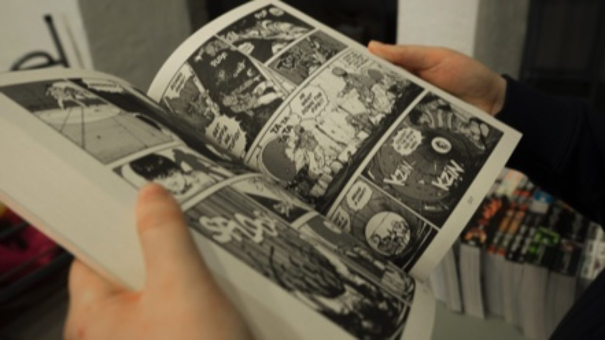

Tentangku.com
Kegiatanku
• Hobi

Hobi saya adalah membaca manga (komik jepang).
Dengan webnovel dan komik fisik ,
Selain membaca hobi saya yang lain adalah bermain game konsol
• Sekolah

Saya bersekolah di sekolah yang bersih dan indah sekolah
Smk 2 Budurandisana terdapat guru yang mengajari ilmu komputer, saya berada di
jurusan RPL(Rekayasa Perangkat Lunak)
SMK Negeri 2 Buduran berasal dari Sekolah Menengah Ekonomi Atas yang
sebelumnya merupakan peningkatan sekolah dari Sekolah Menengah
Ekonomi Pertama di Porong ditingkatkan menjadi Sekolah Menengah
Ekonomi Atas yang diterbitkan melalui Keputusan Menteri Pendidikan
dan Kebudayaan Republik Indonesia atas nama Sekretaris Jenderal T.
Umar Ali Nomor : 017/0/1979 tanggal 29 Januari 1979. Bersama itu
pula yang menjabat sebagai Kepala Sekolah Menengah Ekonomi Atas yang
pertama dijabat oleh Bapak Drs. Heru Soejipto.
• Cita-Citaku

Saya bercita-cita menjadi seorang developer game dan membuat game dan berkolaborasi dengan perusahaan game yang terkenal
• Next 10 year
Pertama saya akan kuliah agar mendapat cukup ilmu developing yang saya butuhkan untuk membuat game,setelah lulus kuliah saya akn mencoba project game dengan teman teman saya